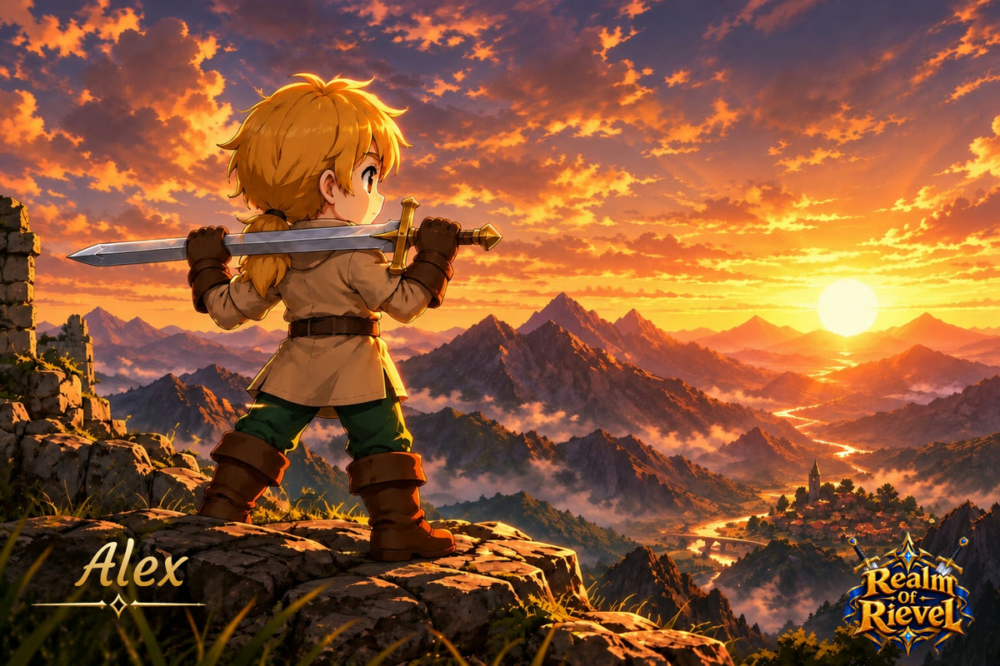

Alex
Human (from the Central Plains) · WarriorHumano (das Planícies Centrais) · GuerreiroHumano (de las Llanuras Centrales) · GuerreroManusia (dari Dataran Tengah) · Pejuang
COST 2TANKHP 18 · AC 12 · MOVE 4
Alex knows exactly what he will be one day: a royal knight. For now he is only an apprentice, which means polishing armor he is not allowed to wear, feeding horses he is not allowed to ride and losing a lot of training duels.O Alex sabe exatamente o que vai ser um dia: um cavaleiro real. Por enquanto é só aprendiz, o que significa polir armaduras que não pode vestir, alimentar cavalos que não pode montar e perder muitos duelos de treino.Alex sabe exactamente lo que será algún día: un caballero real. Por ahora es solo un aprendiz, lo que significa pulir armaduras que no puede vestir, alimentar caballos que no puede montar y perder muchos duelos de práctica.Alex tahu persis akan jadi apa dia suatu hari nanti: seorang ksatria kerajaan. Untuk saat ini dia masih murid, artinya menggosok zirah yang tak boleh dipakai, memberi makan kuda yang tak boleh ditunggangi, dan sering kalah dalam duel latihan.
But every evening he climbs the same cliff, rests his sword on his shoulders and watches the sun go down over the kingdom he wants to protect. He is not the strongest of the apprentices. He is just the one who always gets back up.Mas todo fim de tarde ele sobe no mesmo penhasco, apoia a espada nos ombros e vê o sol se pôr sobre o reino que quer proteger. Ele não é o mais forte dos aprendizes. É só aquele que sempre se levanta.Pero cada atardecer sube al mismo risco, apoya la espada en los hombros y mira ponerse el sol sobre el reino que quiere proteger. No es el más fuerte de los aprendices. Es simplemente el que siempre se levanta.Tapi setiap sore dia mendaki tebing yang sama, menyandarkan pedang di bahunya, dan memandang matahari terbenam di atas kerajaan yang ingin dia lindungi. Dia bukan murid yang terkuat. Dia hanya yang selalu bangkit lagi.
- AttackAtaqueAtaqueSerangan Sword, 1d8+1 damage to an adjacent enemy.Espada, 1d8+1 de dano num inimigo colado.Espada, 1d8+1 de daño a un enemigo contiguo.Pedang, 1d8+1 damage ke musuh di sebelahnya.
- Defend Raises his shield: +2 AC until his next turn.Ergue o escudo: +2 de AC até o próximo turno.Levanta el escudo: +2 de AC hasta su próximo turno.Mengangkat perisai: +2 AC sampai giliran berikutnya.
- Resistance (Skill - level 1Skill - nível 1Habilidad - nivel 1Skill - level 1) Passive. Every hit he takes deals 2 less damage. A weak hit can be blocked completely.Passiva. Todo golpe que ele recebe causa 2 a menos de dano. Um golpe fraco pode ser bloqueado por inteiro.Pasiva. Cada golpe que recibe hace 2 menos de daño. Un golpe débil puede bloquearse por completo.Pasif. Setiap serangan yang mengenainya berkurang 2 damage. Serangan lemah bisa tertahan sepenuhnya.